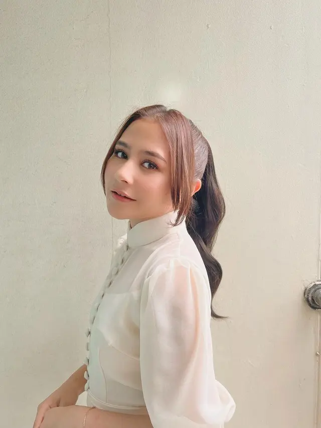
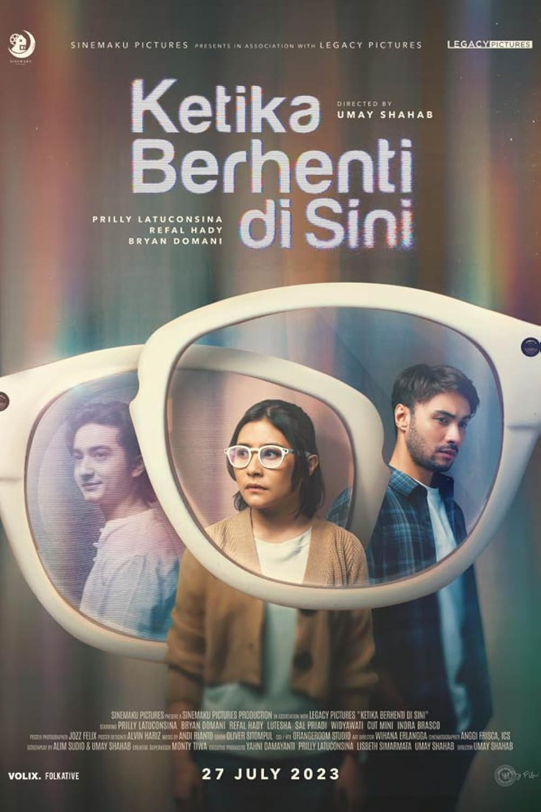

Festival Film Indonesia
Piala Citra
Kategori Pemeran Pendukung Perempuan Terbaik
CURRICULUM VITAE
Profesional di industri entertainment Indonesia dengan pengalaman dalam seni peran, produksi film, musik, presenting, komunikasi publik, dan industri kreatif.
Seorang aktris, produser, penyanyi, dan presenter Indonesia yang aktif di industri entertainment.
Karier profesional mencakup berbagai produksi televisi dan film layar lebar, serta aktivitas di bidang musik dan industri kreatif.
Keterlibatan dalam dunia produksi film memperluas peran profesional dari sisi pemeran hingga produser dalam berbagai proyek perfilman Indonesia.
Sarjana Ilmu Komunikasi
Memulai perjalanan di industri entertainment melalui program televisi Koki Cilik.
Mengembangkan pengalaman sebagai pemeran dalam produksi televisi.
Berperan sebagai pemeran utama dalam film layar lebar Danur.
Memerankan karakter Niskala sekaligus terlibat dalam produksi film sebagai produser.
Memerankan karakter Anindita Semesta serta terlibat sebagai produser dalam produksi film.
Terlibat dalam produksi film Temurun sebagai executive producer.
Seni peran untuk film dan televisi.
Proses dan pengelolaan produksi film.
Pengelolaan proyek produksi kreatif.
Pengembangan ide dan konsep kreatif.
Komunikasi dan presentasi di depan publik.
Hosting dan presenting program.
Penyampaian cerita melalui media kreatif.
Komunikasi interpersonal dan profesional.
Koordinasi dan pengelolaan tim.
Pengembangan arah kreatif proyek.
Vocal performance dan aktivitas musik.
Pengembangan bisnis dan proyek kreatif.
Komunikasi dengan media dan publik.
Perencanaan dan koordinasi kegiatan.
Kolaborasi dalam lingkungan profesional.
Pengelolaan waktu dan prioritas pekerjaan.

Pemeran Utama · Produser

Pemeran

Pemeran · Produser
Karya dan rilisan musik Prilly Latuconsina tersedia melalui Spotify.
Piala Citra
Kategori Pemeran Pendukung Perempuan TerbaikNominasi
Film Budi PekertiNominasi
Ketika Berhenti di SiniNominasi
Kukira Kau RumahNominasi Best Asian Actress
Ketika Berhenti di SiniNominasi Best Producer
Ketika Berhenti di SiniNominasi
Kukira Kau RumahNominasi
Karya perfilman IndonesiaApresiasi, masukan, maupun peluang kolaborasi dapat disampaikan melalui formulir feedback.